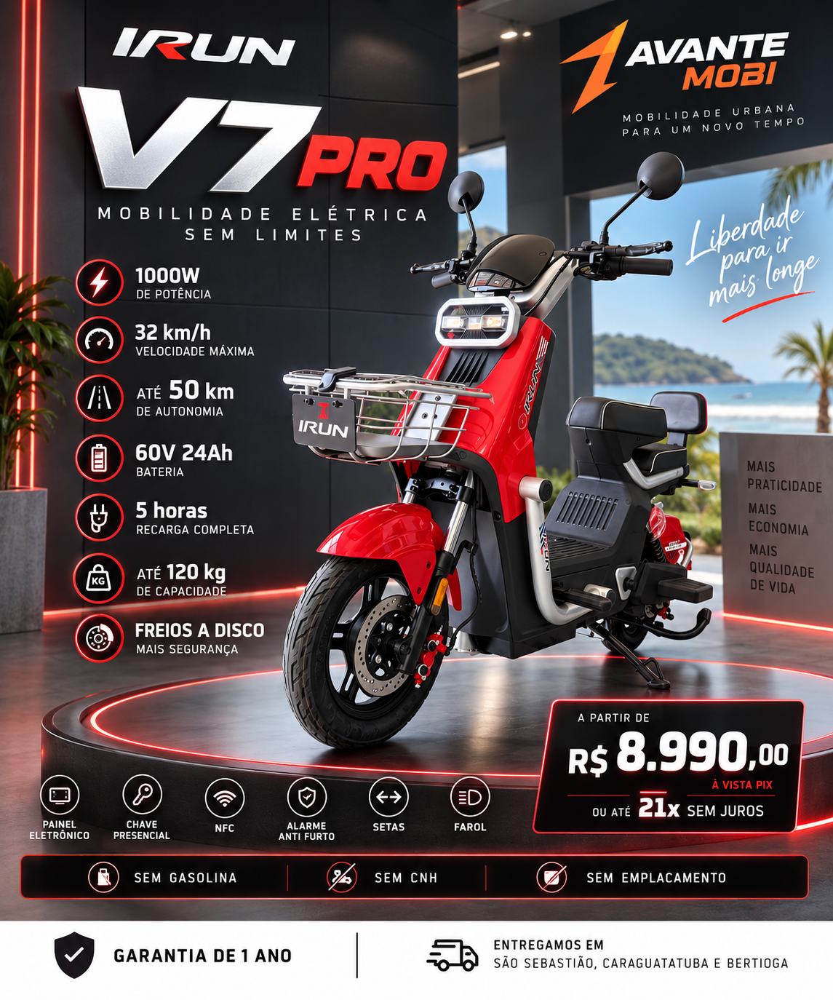

V7 Pró
Uma opção versátil para deslocamentos urbanos, rotina e lazer.
- Visual urbano e moderno
- Bateria removível
- Atendimento e suporte local
Scooters elétricas para quem busca praticidade, economia e estilo — com atendimento consultivo, test ride e suporte local de verdade.

Na Avante, cada cliente é orientado conforme rotina, distância, conforto, autonomia e forma de uso.
Uma opção versátil para deslocamentos urbanos, rotina e lazer.
Para quem busca presença, conforto e praticidade no dia a dia.
Para quem quer mais presença e uma experiência de mobilidade mais completa.
Modelos, cores, disponibilidade e condições comerciais podem variar. Consulte a equipe Avante Mobi.
O test ride faz parte do nosso atendimento consultivo. Queremos que você sinta conforto, posição de condução, resposta e praticidade antes de decidir.
Agendar test rideRotina, distância, conforto e necessidade.
Sem empurrar modelo que não faça sentido.
Test ride com orientação e segurança.
Condições e próximos passos de forma clara.
Nosso compromisso é acompanhar o cliente também depois da compra.
1 ano para motor, módulo e bateria; 3 meses para demais peças, conforme condições de cobertura e uso.
Atendimento presencial em Maresias para orientação, dúvidas e acompanhamento pós-venda.
Estrutura para peças, acessórios e encaminhamento de manutenção conforme o tipo de serviço.
Converse com a nossa equipe, conheça os modelos disponíveis e agende uma experiência.
Av. Francisco Loup, 208
Sim. O test ride é agendado conforme disponibilidade do modelo e condições de segurança. Fale conosco pelo WhatsApp.
Sim. Nosso atendimento é consultivo: entendemos como você pretende usar a scooter e indicamos as opções mais adequadas.
Sim. Trabalhamos com garantia conforme o produto e as condições de cobertura. Para os modelos comercializados atualmente, a referência é 1 ano para motor, módulo e bateria e 3 meses para demais peças, observadas as condições aplicáveis.
Sim. Estamos na Av. Francisco Loup, 208, em Maresias, São Sebastião/SP.